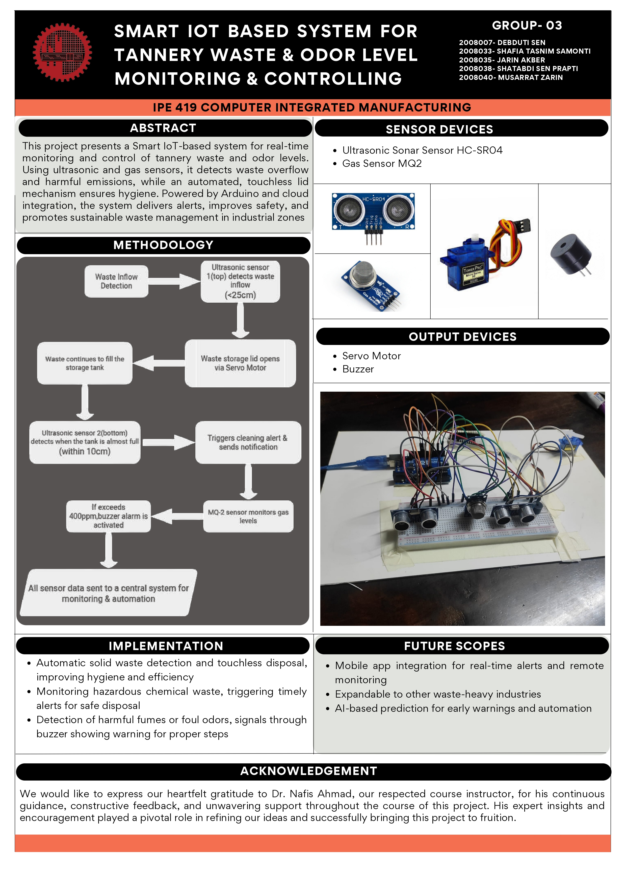

This project presents a smart IoT-based system for real-time monitoring and control of tannery waste and odor levels . Using ultrasonic and gas sensors, it detects waste overflow and harmful emissions, while an automated, touchless lid mechanism ensures hygiene. Powered by Arduino and cloud integration, the system delivers alerts, improves safety, and promotes sustainable waste management in industrial zones.
| Device / Component | Task / Function |
|---|---|
| HC-SR04 Ultrasonic Sonar Sensor | Detects waste overflow, triggers alerts, enables touchless operation |
| MQ2 Gas Sensor | Detects harmful chemical fumes or odors; monitors air quality (PPM) |
| Servo Motor | Automatically opens/closes the lid for contactless disposal |
| Buzzer | Sounds warning if hazardous gas threshold is exceeded |
| Arduino UNO | Main controller; reads sensors, operates actuators, sends data |
| ESP8266/IoT WiFi Module | Uploads sensor readings and alerts to cloud database/mobile app |

#include <Servo.h>
// Pin definitions
const int trig1 = 6;
const int echo1 = 7;
const int trig2 = 9;
const int echo2 = 10;
const int servoPin = 11;
const int mqPin = A0;
const int buzzerPin = 3;
Servo myServo;
void setup() {
Serial.begin(9600);
pinMode(trig1, OUTPUT); pinMode(echo1, INPUT);
pinMode(trig2, OUTPUT); pinMode(echo2, INPUT);
pinMode(mqPin, INPUT); pinMode(buzzerPin, OUTPUT);
myServo.attach(servoPin);
myServo.write(0);
}
long readUltrasonicCM(int trigPin, int echoPin) {
digitalWrite(trigPin, LOW); delayMicroseconds(2);
digitalWrite(trigPin, HIGH); delayMicroseconds(10);
digitalWrite(trigPin, LOW);
long duration = pulseIn(echoPin, HIGH, 30000);
long cm = duration * 0.034 / 2;
return cm;
}
void loop() {
long distance1 = readUltrasonicCM(trig1, echo1);
long distance2 = readUltrasonicCM(trig2, echo2);
int mqValue = analogRead(mqPin);
if (distance2 > 0 && distance2 <= 10) {
myServo.write(90);
} else {
myServo.write(0);
}
if (mqValue > 200) {
digitalWrite(buzzerPin, HIGH);
} else {
digitalWrite(buzzerPin, LOW);
}
Serial.print(distance1); Serial.print(",");
Serial.print(distance2); Serial.print(",");
Serial.println(mqValue);
delay(1000);
}